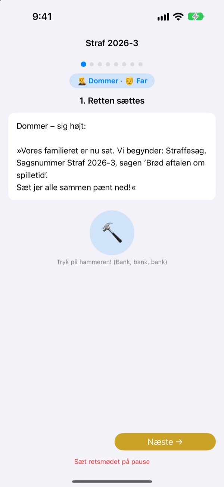
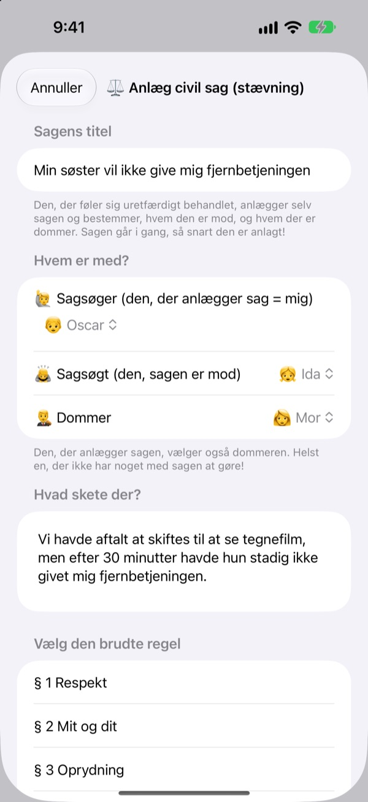
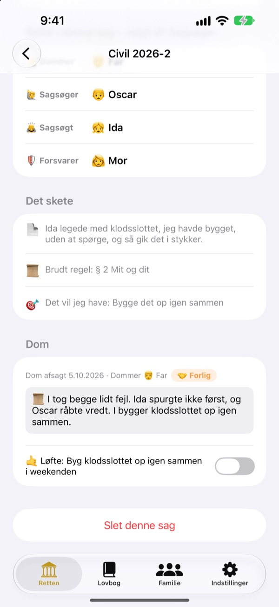
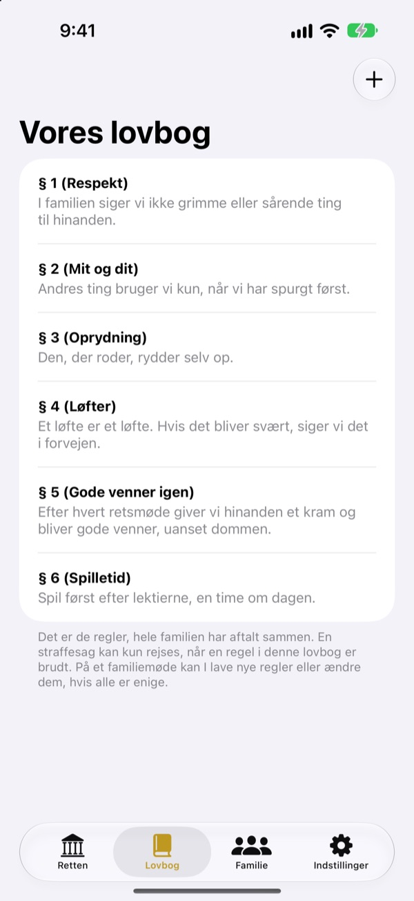

Uretfærdigt?
Ingen tårer, tag det i retten.
Dit barn indgiver selv stævningen som sagsøger, og familien deler rollerne som dommer og forsvarer. Et manuskript fortæller ved hvert trin, hvis tur det er, og hvad der skal siges, så selv den første sag kører som en rigtig.
Ingen reklamer, ingen køb, ingen tilmelding. Alt bliver på denne enhed.

Hold en retssag
En kort sag: „Min lillebror vil ikke give mig fjernbetjeningen.“ Skift ordniveau øverst, slå med hammeren, og start timeren. Der kommer lyd, så tjek lydstyrken.
„Det var ham, der startede!“ Træt af altid at være dommer?
Når der er ballade, er det som regel en voksen, der afgør det. Taberen græder, fordi det føles uretfærdigt, og vinderen ved ikke rigtig hvorfor. Familieretten giver børn en rækkefølge: fortæl hele din side, og hør den anden side helt til ende. Og dommen slutter med et løfte, ikke kun en straf.
Den, der føler sig uretfærdigt behandlet, sagsøger selv
Den, der synes, noget er uretfærdigt, bliver sagsøger og indgiver stævningen. Hvem sagen er mod, og hvem der skal være dommer, vælger den, der sagsøger. Børn kan endda sagsøge mor og far.
Så du nogen bryde en husregel? Bliv anklager, og rejs en straffesag. Kun en, der hverken er sagsøger eller sagsøgt, kan være dommer.

Domme slutter med et løfte
Med dommen følger et løfte eller en straf, som I krydser af, når det er klaret. Afsluttede sager bliver til jeres egne domme.
Forslagene til straf starter med at gøre det godt igen og hele følelser, mere reparation end straf. Mindre spil eller tv kommer sidst.

Jeres hus, jeres love
Skriv de regler, I er enige om, ned som paragraffer, fx respekt, oprydning og at holde løfter, og tilføj eller ret dem når som helst. I stævningen vælger I den lov, der blev brudt.
„Lær om retten“ forklarer, hvad dommere, sagsøgere, anklagere og forsvarere laver, og hvordan en retssag forløber.

Kom i gang i tre trin
- 1
Tilføj familien
Et navn og en emoji er nok. Ingen konto.
- 2
Indgiv en sag
Uretfærdigt? Civil sag. Husregel brudt? Straffesag. Vælg så en dommer.
- 3
Sæt retten
Følg manuskriptet, hold tiden med timeren, og afsig dommen med hammeren.
Ord, der vokser med dit barn
- Dommer
- Enkelt: Bestemmer · Retssal: Retsformand
- Sagsøger
- Enkelt: Den, der klager · Retssal: Sagsøger
- Sagsøgt
- Enkelt: Den, der svarer · Retssal: Sagsøgt
- Anklager
- Enkelt: Den, der sagde det · Retssal: Anklager
- Tiltalt
- Enkelt: Den, der svarer · Retssal: Tiltalt
- Forsvarer
- Enkelt: Hjælper · Retssal: Forsvarer
- Civil sag
- Enkelt: Uretfærdigt · Retssal: Civil sag
- Straffesag
- Enkelt: Brudt regel · Retssal: Straffesag
Vælg ordniveau i Indstillinger, så skifter ordene på skærmen og i manuskriptet på én gang. Prøv Enkelt til børnehavebørn og Standard til skolebørn.
Spørgsmål og svar
Hvilken alder passer det til?
Alle børn, der kan læse, kan være med sammen med en forælder. Med manuskriptet, vejledningen og ordniveauet Enkelt kan yngre børn også være med, når en voksen læser højt.
Er det virkelig gratis?
Ja. Ingen reklamer og ingen køb, der låser funktioner op. I Indstillinger kan man give et frivilligt drikkepenge-bidrag til udvikleren, men det låser hverken noget op eller i.
Skal man have internet?
Nej. Retssager og arkiv virker helt offline. Kun når du sender feedback fra Indstillinger, skal du have internet og være logget ind på iCloud.
Hvor gemmes oplysningerne?
Familie, love, retssager og domme gemmes kun på enheden og sendes ikke til nogen server. Udvikleren får kun den feedback, du selv sender, og anonym brugsstatistik, der ikke kan føres tilbage til dig.
Kan jeg tage backup eller flytte til en anden enhed?
Brug „Gem data“ i Indstillinger til at eksportere alt til en fil, og „Hent data“ på den anden enhed, så er alt der igen præcis som før. Backups fra den gamle webversion kan også hentes.
Virker det på iPad?
Ja, på både iPhone og iPad. En stor skærm er perfekt, når hele familien sidder rundt om.
Hvad hvis straffene bliver for hårde?
Når anklageren beder om en straf, minder manuskriptet om, at den ikke må være for hård, men skal kunne overholdes. Forslagene starter med at reparere: gøre det godt igen, hele følelser og se det fra den andens side.
Hvordan sletter jeg alt?
Sletter du appen, forsvinder alle sager på enheden med. Intet har forladt den, så der ligger heller intet andre steder. Vil du have slettet feedback, du har sendt, så skriv til os.
Fejl, idéer eller noget helt tredje? Skriv til leeo@kakao.com. Du kan også sende feedback fra appens indstillinger.